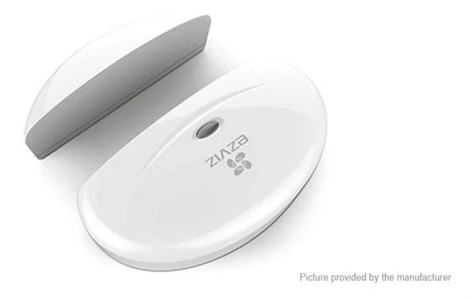

CS-K2-A
 Características
Características
Control Remoto Inalàmbrico para Alarma Ezviz
CS-K2-A
Cuenta con botón de pánico para activar la sirena y
enviar una notificación a la aplicación móvil EZVIZ.
Cuenta con batería modelo CR2032 con 1 año de vida
util.
Permite armar o desarmar la casa.
Dimensiones: 63×42×15.4mm
Peso: 13.5g
CS-T1-C/12M
 Características
Características
Detector de movimiento PIR inmune a mascotas
CS-T1-C/12M
Inmune a mascotas hasta de 25kg
Rango de detección hasta 12x12m
Ángulo visual horizontal 100o
Dimensiones: 99×66×38mm
Peso: 68g
CS-T2-A

Características
Contacto Magnético Inalambrico
CS-T2-A
Uso Interior
Frecuencia de trabajo 868MHz
Distancia de disparo 30 mm ± 5 mm
Distancia de restauración 25 mm ± 5 mm
Voltaje de trabajo 3V
Dimensiones: 71.9 × 50 × 18.5mm
Peso: 30g
CS-T3-A
 Características
Características
Botón de Emergencia inalambrico
CS-T3-A
Frecuencia de trabajo 433MHz
Podemos activar la sirena y nos puede llegar una
alerta hacia la aplicacion movil EZVIZ de que algo
esta sucediendo.
Usa batería modelo CR2450 con 2 años de vida útil
Dimensiones: 63.5 x 61 x 17 mm
CS-T6-A
 Características
Características
Detector de Movimiento / Vibraciones Inalambrico
CS-T6-A
Reacciona al movimiento en tres direcciones
Cobertura de propagación de hasta 80 metros (línea
de visión)
Responde a los cambios:> 3 °
Batería incorporada (recargable)
Duración de la batería: hasta 3 meses
Recarga de la batería cable USB incluido
Temperatura de trabajo: -10 ° C ~ 55 ° C
Dimensiones: 83 x 30 x 12 mm
Peso: 30g
CS-T9-A
 Características
Características
Sirena / Estrobo Inalambrica
CS-T9-A
Volumen de alarma: 85dB (3m de distancia)
Requiere una fuente de alimentación separada
(adaptador USB incluido)
Cobertura de hasta 80 metros (línea de visión)
Temperatura de trabajo: -10 ° C ~ 55 ° C
Alimentación: 5 vcd (incluye cable de 1 metro y
transformador).
Dimensiones: 121 x 67 x 33 mm
Peso: 77 grs.